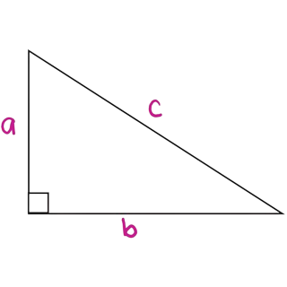

Explicação para o filósofo
Primeiramente essa teoria é extremamente importante para a matemática, influenciando diversos resultados matemáticos. E para aplicação de seu teorema, é utilizado algumas nomenclaturas, como o maior lado do triângulo que é sempre oposto ao maior ângulo, de 90°. Esse nomeado de hipotenusa, já os demais são os catetos. O qual um deles oposto a hipotenusa sendo o cateto oposto e o outro cateto adjacente.
Calculadora
Coloque abaixo dois lados do triângulo para descobrir o outro: (Deixe valor em branco em que quer descobrir)
a - Cateto oposto:
b - Cateto adjacente:
c - hipotenusa:
" Escolha sempre o caminho que pareça o melhor, mesmo que seja o mais difícil; o hábito brevemente o tornará fácil e agradável." - Pitágoras
Isso é uma frase sua filósofo, então para que pegar o caminho mais facil e desistir? Continue para que o caminho se torne melhor!